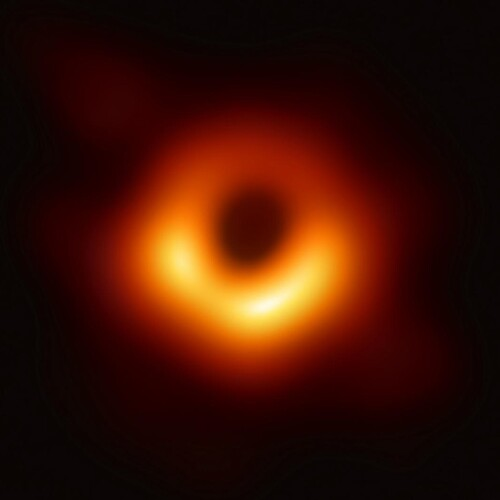

Light Of The Universe

Light Of The Universe
Conscious Life,
is the true light of the universe.
Set aside dark imaginings,
because the future is bright.
Complexity does manufacture universes,
that eventually go dark and perfectly cold.
But they only grow cold,
when there is no conscious life to keep the light lit.
We are the conscious life of this universe,
and as it transforms, so do we grow in capacity and understanding.
In order for you to be driven by the correct force,
you must understand yourself.
In order to understand yourself,
you have to understand your place in the entire universe, and beyond.
You are not just you,
you are not just a student, an employee, or a citizen...
You are the light of the Universe,
you along with all the other conscious life is the very meaning of this universe.
The beings that evolve from who we are today,
will be here long enough to observe that anything that can happen, eventually happens.
After all, it is where we come from,
fundamental laws of Physics and Chemistry, and plenty of accidents[1].
There are no limits to what evolving and adaptive systems are capable of,
we have to face that truth.
There are many broken things in our world,
but we are more than that, far more than ineffective politics and governments.
In order to proceed forward,
we have to make sure that we are driven by the correct forces.
Alex The Supertramp[2] when faced with meaningless education,
took to his own adventure, his met a sad end, but he was on the correct path.
The path of finding him self,
away from all the places where people told him to search.
President Reagan[3], sheds some more light with a thought experiment,
that helped him gain a better perspective on world problems.
Carl Sagan[4] too,
wished to help us see ourselves better.
Do not let troubles that Humanity faces today keep you down,
the trouble can only be solved by those who rise.
Eventually, Humanity will take to the stars,
we will begin changing and evolving to match new habitats and conditions.
We will be spread across the galaxy and beyond,
as different from one another as an Ape is different from a Shrew.
Divided by space and time,
we will still remain a single family connected by our common ancestors.
Learn, so that the forces driving you,
will help to make you stronger and wiser.
Learn, because of the magnificent being that you already are,
compared to distant quasars and lonely planets, and space.
All that infinite space, shows how precious you are to the universe,
by contrast.
Find books that speak to you,
and never stop learning.
The world needs you,
so that it may grow.
You are the light of the universe,
and wisdom and greatness is what will fuel your works - to no end in time.
Black hole photo credit.[5]
Light Of The Universe References
[1]: https://www.youtube.com/watch?v=bNvU9bMZ4yI
[2]: https://www.youtube.com/watch?v=Mwx3RvDWvDM
[3]: https://www.youtube.com/watch?v=uD2186Yh0Uc
[4]: https://www.youtube.com/watch?v=GO5FwsblpT8
[5]: https://en.wikipedia.org/wiki/File:Black_hole_-_Messier_87_crop_max_res.jpg